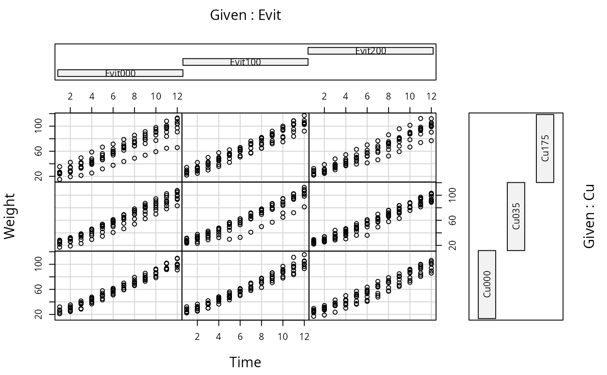

dietox.RdThe dietox data frame has 861 rows and 7 columns.
dietoxThis data frame contains the following columns:
Weight in Kg
Cumulated feed intake in Kg
Time (in weeks) in the experiment
Factor; id of each pig
Factor; vitamin E dose; see 'details'.
Factor, copper dose; see 'details'
Start weight in experiment, i.e. weight at week 1.
Factor, id of litter of each pig
Lauridsen, C., Højsgaard, S.,Sørensen, M.T. C. (1999) Influence of Dietary Rapeseed Oli, Vitamin E, and Copper on Performance and Antioxidant and Oxidative Status of Pigs. J. Anim. Sci.77:906-916
Data contains weight of slaughter pigs measured weekly for 12 weeks. Data also contains the start weight (i.e. the weight at week 1). The treatments are 3 different levels of Evit = vitamin E (dose: 0, 100, 200 mg dl-alpha-tocopheryl acetat /kg feed) in combination with 3 different levels of Cu=copper (dose: 0, 35, 175 mg/kg feed) in the feed. The cumulated feed intake is also recorded. The pigs are litter mates.
data(dietox)
head(dietox)
#> Pig Evit Cu Litter Start Weight Feed Time
#> 1 4601 Evit000 Cu000 1 26.5 26.50000 NA 1
#> 2 4601 Evit000 Cu000 1 26.5 27.59999 5.200005 2
#> 3 4601 Evit000 Cu000 1 26.5 36.50000 17.600000 3
#> 4 4601 Evit000 Cu000 1 26.5 40.29999 28.500000 4
#> 5 4601 Evit000 Cu000 1 26.5 49.09998 45.200001 5
#> 6 4601 Evit000 Cu000 1 26.5 55.39999 56.900002 6
if (require(ggplot2)){
qplot(Time, Weight, data=dietox, col=Pig) + geom_line() +
theme(legend.position = "none") + facet_grid(Evit~Cu)
} else {
coplot(Weight ~ Time | Evit * Cu, data=dietox)
}
#> Loading required package: ggplot2
#> Warning: `qplot()` was deprecated in ggplot2 3.4.0.
